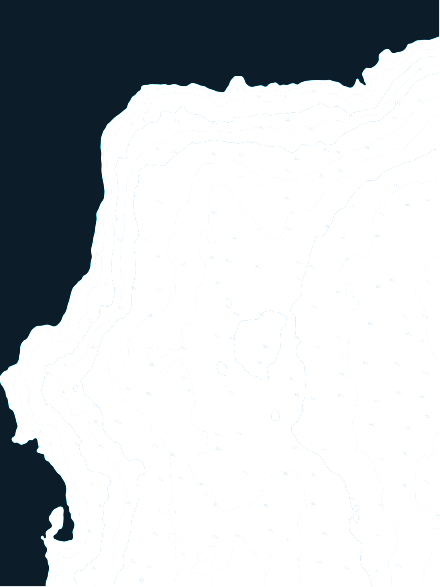
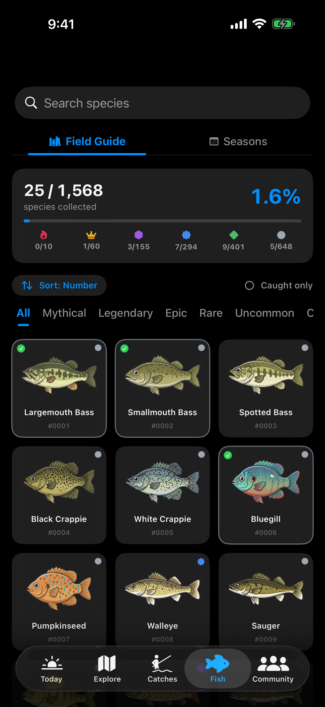

Currents
No bars.Still biting.
A fishing log, bite forecast and field guide that lives on your phone, not our servers.
Built for the gully, the dam wall, and thirty-eight nautical miles out, where the signal gave up an hour ago.
iPhone + Apple Watch / App Store




05:39 · push tide · Breede mouthDusky kob, 112 cm.
Bite score 93 when she ate.
Bite score 93 when she ate.
CrewsYour mates’ fish, not strangers’.
Tide · Kogel Bay · today — gold = bite windows